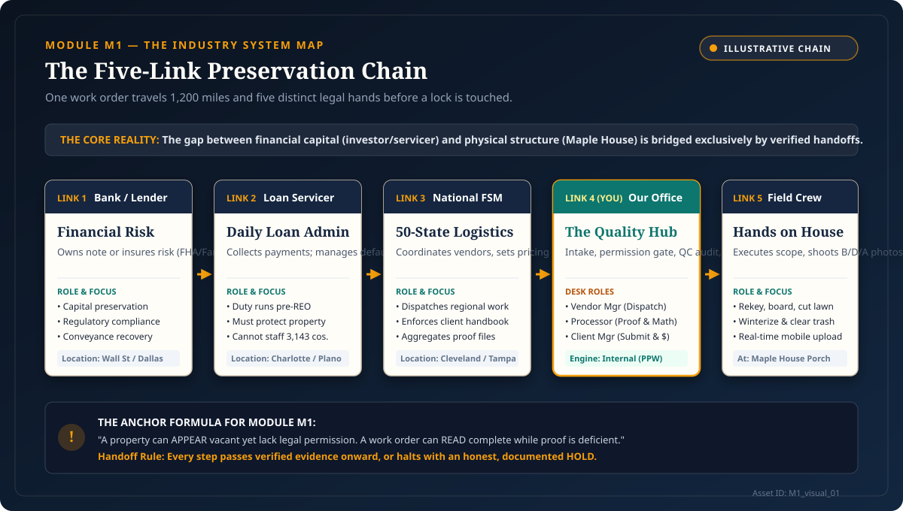

The Chain Is Illustrative; the Handoffs Are Real.
Maple House sits quiet in the rain. Twelve hundred miles away in Dallas, an investor flags a missed mortgage payment. Neither can speak to the other. Between the bank’s ledger and the front porch stands a five-link chain. If any hand drops the baton, the house falls to decay and the money is lost.

Core Principles to Remember
1
Five Hands, One House. One work order travels Bank → Servicer → National → Office → Crew before a single lock is touched.
2
Vacant Is a Condition, Not Permission. The lawn can be knee-high, but without verified legal authority, drilling the lock is criminal trespass.
3
Permission First, Proof Always. Work done is not money earned without photo proof; missing photos turn completed labor into a dead claim.
One Decision Checkpoint
Field technician Dave arrives at Maple House. The grass is fourteen inches tall, mail is spilling from the box, and a neighbor says the tenants left. Can Dave drill the lock and winterize right now?